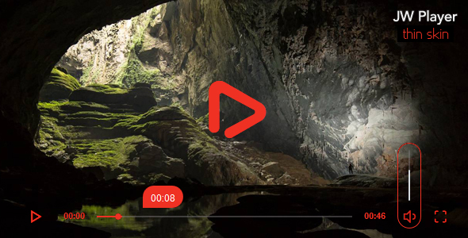

This skin can be build on JW Player 7 or added to your player embeds. After upload it to your webserver, simply set the skin configuration option to the path where you uploaded the XML file.
1. Include the style on the page<link rel="stylesheet" type="text/css" href="//yoursite.com/yourstyles/thin-color.min.css> <script type="text/javascript" src="./jwplayer/jwplayer.js" ></script> <script type="text/javascript">jwplayer.key="YOUR_JW_PLAYER_KEY";</script>and
jwplayer('player_example').setup({
width: 640,
height: 360,
file: "/uploads/example.mp4",
image: "/uploads/example.jpg",
skin : {
name:"thin"
}
});
<link rel="stylesheet" type="text/css" href="//yoursite.com/yourstyles/thin-color.min.css><script type="text/javascript" src="./jwplayer/jwplayer.js" ></script> <script type="text/javascript">jwplayer.key="YOUR_JW_PLAYER_KEY";</script>
jwplayer('player_example').setup({
width: 640,
height: 360,
file: "/uploads/example.mp4",
image: "/uploads/example.jpg",
skin : {
url:"//yoursite.com/yourstyles/thin-color.min.css",
name:"thin"
}
});
If you have any questions that are not answered in this userguide, or any bugs to report, please contact me via email through my CodeCanyon profile. Contacting through CodeCanyon will prove that you purchased the file.